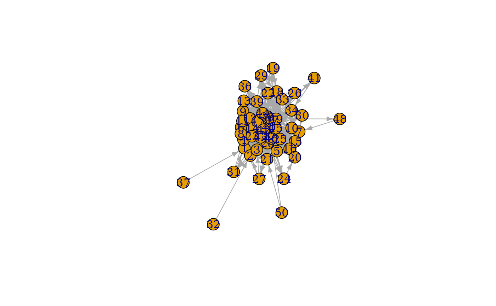

This games create graphs through different types of evolutionary mechanisms (not necessarily in a biological sense). The nature of their algorithm is described in detail at the linked igraph documentation.
play_citation_age(
n,
growth = 1,
bins = n/7100,
p_pref = (1:(bins + 1))^-3,
directed = TRUE
)
play_forestfire(
n,
p_forward,
p_backward = p_forward,
growth = 1,
directed = TRUE
)
play_growing(n, growth = 1, directed = TRUE, citation = FALSE)
play_barabasi_albert(
n,
power,
growth = 1,
growth_dist = NULL,
use_out = FALSE,
appeal_zero = 1,
directed = TRUE,
method = "psumtree"
)
play_barabasi_albert_aging(
n,
power,
power_age,
growth = 1,
growth_dist = NULL,
bins = 300,
use_out = FALSE,
appeal_zero = 1,
appeal_zero_age = 0,
directed = TRUE,
coefficient = 1,
coefficient_age = 1,
window = NULL
)The number of nodes in the graph.
The number of edges added at each iteration
The number of aging bins
The probability that an edge will be made to an age bin.
Should the resulting graph be directed
Forward and backward burning probability
Should a citation graph be created
The power of the preferential attachment
The distribution of the number of added edges at each iteration
Should outbound edges be used for calculating citation probability
The appeal value for unconnected nodes
The algorithm to use for graph creation. Either 'psumtree',
'psumtree-multiple', or 'bag'
The aging exponent
The appeal value of nodes without age
The coefficient of the degree dependent part of attrictiveness
The coefficient of the age dependent part of attrictiveness
The aging window to take into account when calculating the preferential attraction
A tbl_graph object
play_citation_age(): Create citation graphs based on a specific age
link probability. See igraph::sample_last_cit()
play_forestfire(): Create graphs by simulating the spead of fire in
a forest. See igraph::sample_forestfire()
play_growing(): Create graphs by adding a fixed number of edges
at each iteration. See igraph::sample_growing()
play_barabasi_albert(): Create graphs based on the Barabasi-Alberts
preferential attachment model. See igraph::sample_pa()
play_barabasi_albert_aging(): Create graphs based on the Barabasi-Alberts
preferential attachment model, incoorporating node age preferrence. See
igraph::sample_pa_age().
play_traits() and play_citation_type() for an evolutionary
algorithm based on different node types
Other graph games:
component_games,
sampling_games,
type_games
plot(play_forestfire(50, 0.5))
